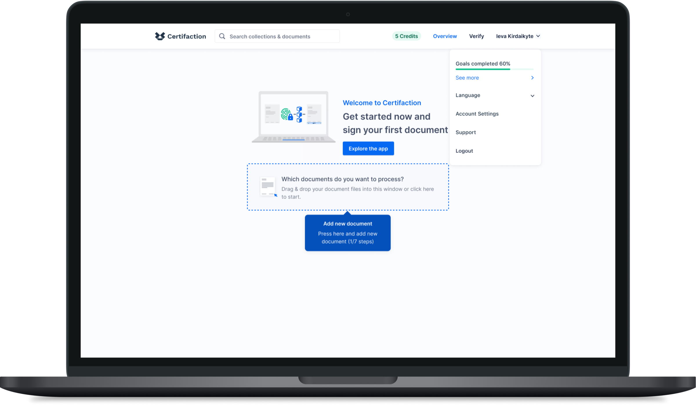
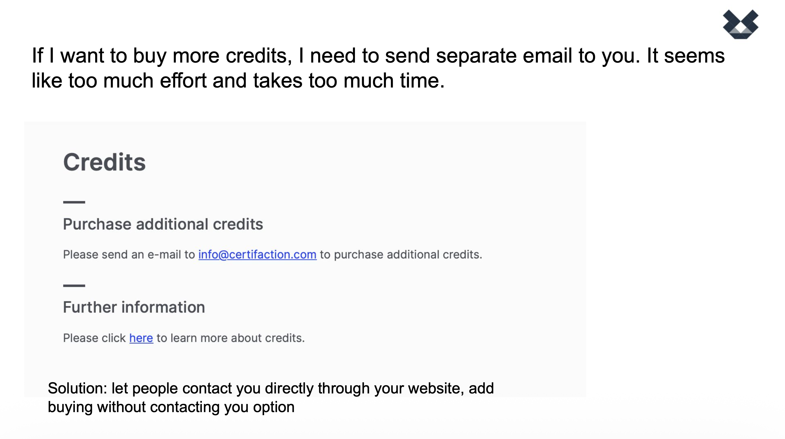
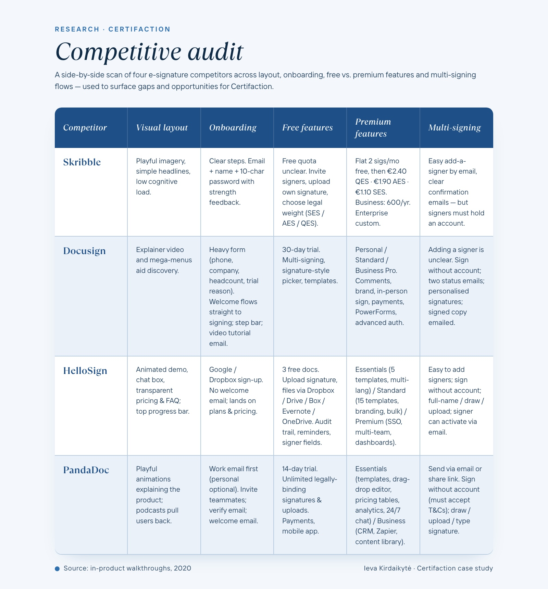

Certifaction
A three-month UX engagement at Switzerland's leading provider of secure, privacy-friendly eSignatures.

Three months, one product, the chance to actually ship.
Certifaction is the leading provider of secure, privacy-friendly eSignatures in Switzerland. I joined for a three-month engagement to audit the product, identify the highest-impact UX gaps, and ship at least one improvement that would measurably change user behaviour.
The structure I proposed: one month per phase. Audit and align in month one. Validate and design in month two. Test and ship in month three. Each phase's output became the next phase's brief.
Month 01, Audit & align.
A full UX analysis of the website, surfaced as a presentation to the team. The deliverable mattered less than the conversation it sparked: by the end of the month I understood the company, the product, and the language each function used to talk about both. I also learned how to give effective feedback inside an organisation that had its own opinions about its product.
Month 02, Validate & design.
A thorough competitive audit evaluated how similar platforms addressed key user needs, and uncovered specific gaps in our own product. After presenting findings, we moved into solutioning. I owned the redesign of the language selection bar and the plan-selection page, aligning the product more closely with what users actually expected to see at those moments.
Month 03, Test & ship.
During brainstorming sessions we identified a structured user-onboarding flow as the highest-impact missing piece. The aim: improve the first-run experience, reduce confusion, and boost engagement. Tested before, redesigned, tested after, and shipped. The numbers moved.


Onboarding moved task completion from 3/10 to 7/10.
Before implementation, usability testing showed only 3 out of 10 users could complete the core task without asking clarifying questions. Most struggled to understand the workflow on first contact.
After introducing the onboarding flow, follow-up testing showed 7 out of 10 users completed the same task independently, and reported feeling more confident and oriented within the first minutes of use.
More than a metric move, it was a confirmation that the right intervention, validated and shipped within a single quarter, can change the relationship users have with a product.


A range of contributions, not just one feature.
Alongside the onboarding work, I crafted wireframes and mockups across the product, supported the team with UX writing, contributed to branding workshops, and assisted marketing with research and case studies. I also produced onboarding videos to walk new users through the web app at their own pace.
The breadth was deliberate. A three-month engagement is short, the only way to leave a meaningful trace is to be useful in adjacent moments, not just the headline deliverable.
What three months at Certifaction taught me.
The first deliverable should be understanding, not output.
Spending a month auditing and presenting before designing felt slow on day five and obviously right by day twenty. Every later decision rested on that shared starting point.
Validate before you ship, even when the timeline is tight.
The pre-test (3/10) didn't just justify the redesign; it gave the team a number to compare against. Without that baseline, "better" stays subjective forever.
Adjacent contributions compound.
Wireframes, UX writing, branding inputs, marketing assistance. None of those were the headline ship, but together they made the headline ship land in a coherent product.
Effective feedback is its own deliverable.
Month one was about giving feedback the team could act on. The art of doing that, diplomatic without being vague, specific without being prescriptive, is something I still actively practise.